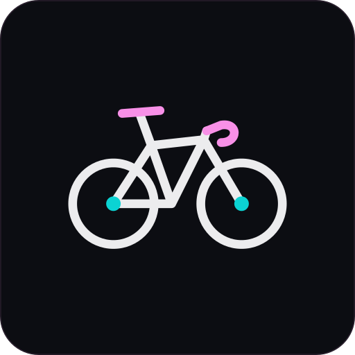

Field note · 014
Most rewrites are a people problem.
The code is usually fine. Ownership is not. Fix the ownership first, then the code follows.
There are two tracks. Expert posts show judgment, and Lighter posts show the person behind the work. Click any text to edit it. Click 1:1 to show one post at full size, then capture it at 1080×1350. Press Esc to go back. For scripted export, open ?post=a1.
The code is usually fine. Ownership is not. Fix the ownership first, then the code follows.
Number 3 shows up in almost every team I join.
If shipping depends on one person's memory, the process is the bug. Write it down, then automate it.
Recognise three or more? Let's talk. I help teams move from "who knows this?" to "we've got this."
Developers stopped waiting and started shipping. The boring fixes compound.

Riding somewhere without Wi-Fi. The inbox can wait. Good software doesn't need me watching it.
